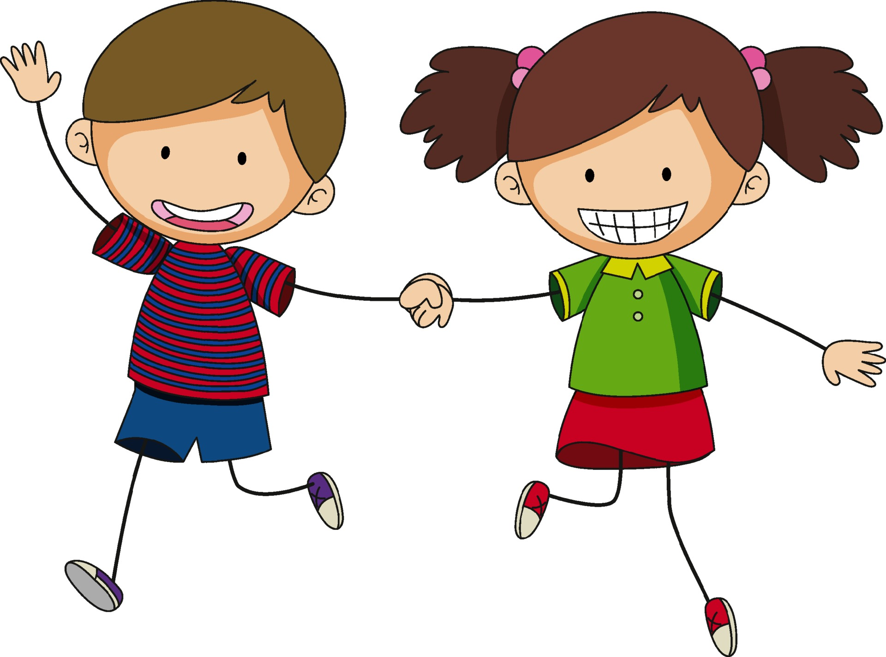
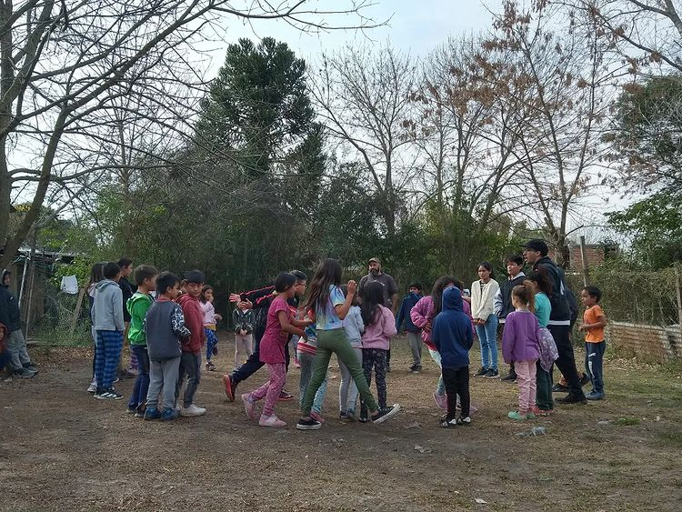

~Niñez~

- 
- 
¿Que buscamos?
Pantalón Cortito, siendo una organización comunitaria que se dedica a la protección y al fortalecimiento de las niñas, niños, adolescentes y sus Familias, enfoca todos sus esfuerzos en el acompañamiento para la formación de personas conscientes de su realidad, en la construcción de un mundo más justo y humano, en una apuesta a los niños, niñas y adolescentes, para que éstos sean los constructores de un mejor destino. Que sean multiplicadores de formación en prácticas sociales y comunitarias, como una forma de sensibilizar a la comunidad sobre las realidades sociales, políticas, económicas y culturales, desde la dignidad, la fraternidad, los sueños, la ternura y la solidaridad. Disminuir la ocurrencia y frecuencia de los fenómenos de vulnerabilidad y exclusión social a partir de la inclusión de niños/niñas y adolescentes y de sus familias en ámbitos que les permitan establecer vínculos y relaciones con otras personas e instituciones. Promover y crear espacios de comunicación, arte y cultura para fomentar la identidad individual y colectiva.
- Promover valores humanos con prácticas socio-comunitarias de concientización para los niños, niñas, adolescentes y sus familias.
- Mantener los talleres para acompañar a los niños/as y adolescentes en su desarrollo personal fomentando el intercambio con el grupo de pares y sus familias, ofreciendo contención y referencias institucionales.
- Mejorar la calidad de vida, estimular las capacidades cognitivas y favorecer sentimientos de autoestima en los chicos.
- Mantener la atención a los niños, adolescentes y familias de nuestro barrio en el centro de salud “Tekó Porá” y atención para nuestros niños en jardín maternal.
Articulamos muy fuertemente con el Servicio Zonal de La Plata así como también con los Servicios Locales para la promoción y protección de los derechos de los adolescentes entregando informes y realizando reuniones en el caso de que se detecten factores de riesgo y vulneraciones de derechos de los mismos.